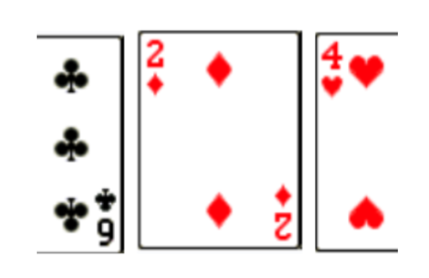
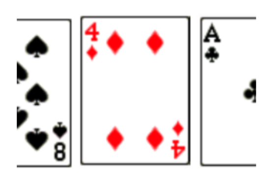
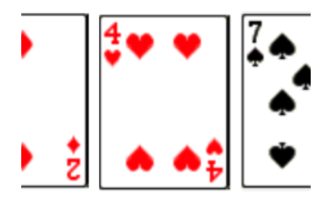
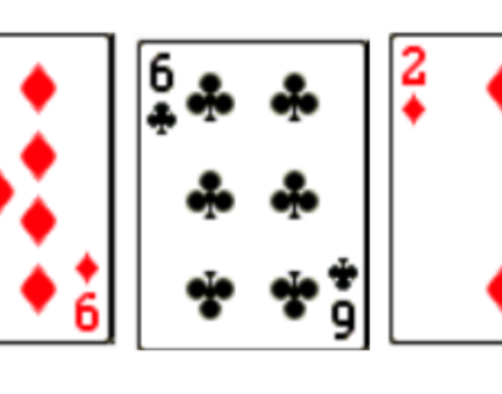
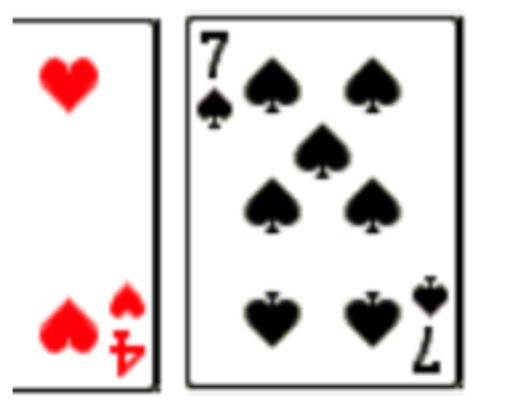
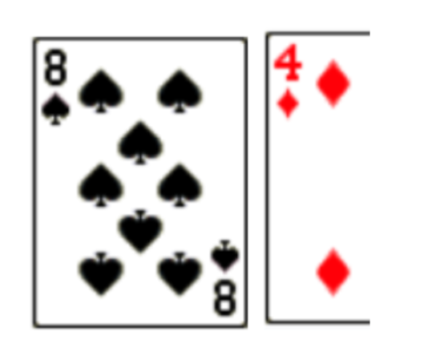
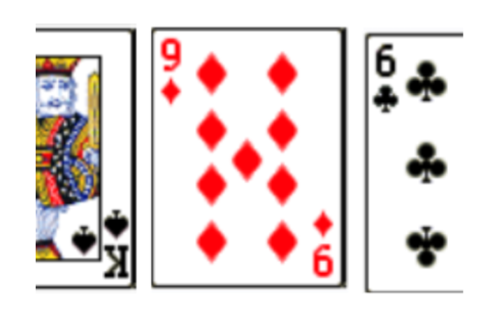
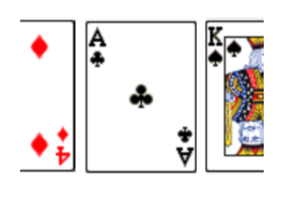
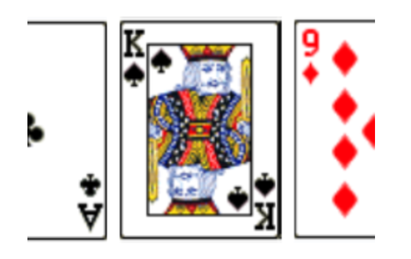

Linked Lists and Queues
Learn how queues work, why arrays can be inefficient for them, and how linked lists can solve the problem.
Intro Activity
A set of 9 cards were arranged in a row on a table. You cannot remember the order the cards were arranged in, but you took pictures of each of them. The pictures are shown below. Determine the original order that the cards were arranged in.









Watch the first 20 seconds of this video
In the video, the characters were using a web application to buy Comic-Con tickets. This application would have needed to handle many thousands of ticket purchase attempts in a short amount of time. It would have needed to keep track of a line of people waiting to buy tickets.
For fairness, the app would also need to keep track of the order that users clicked on the “buy tickets” button in, so that if person A clicks the button before person B, person A will get tickets before person B, just like a line in real life.
In the video, Leonard says: “I’m in the queue!!” meaning that he was added to the line, but then he says that his position in line is 50,211, meaning that tickets will probably be sold out before his ticket request reaches the front of the line 🙁.
Briefly think: What programming structure might you use to keep track of all of the users that have clicked on the “buy tickets” button?
You might have thought to use an Array for this, and that would work, but an array would not be the best choice for speed in this particular scenario.
When you add an item to an array, you may need to shift items or create an entirely new array. When deleting an item from an array, items after the deleted item need to move forward. For this reason, both adding and deleting items from an array can have linear time complexity.
Queues and Linked Lists
In computer programming, a queue is a programming structure that represents a line. When you remove an item from a queue it is removed from the front of the queue, and when you add an item to the queue, it is added to the end.
A good way to make a queue is to create a structure called a linked list, which will store all of the items in the queue.
A linked list is sort of like an array, except that the items in a linked list do not need to be stored together in order in memory. Instead, the items can be stored anywhere, because every object in a linked list contains fields which reference the previous item and next item in the list.
A queue is a “first-in, first-out” data structure meaning that the item that was added to the queue first will be at the front, and will thus be the first to be removed from the queue.
Write what the linked list would look like if Elsa was removed from the list.
Finding Items in a Linked List
Suppose the following objects represent a linked list. Note that the items aren’t written in order. This illustrates that they don’t need to be stored in order in memory since each item contains a reference to the items before and after it.
(Brock Misty) (Brock Misty Ash) (Misty Ash Joy) (Ash Joy Gary) (Joy Gary Blaine) (Gary Blaine Erika) (Blaine Erika)
There is a problem that arises with linked lists: how can we access an item in the list if it is not at the start or end of the list?
To access an item in a linked list, we must start at the beginning of the list and repeatedly access the next link until we have found the item we wish to access. Alternatively, we could start at the end and repeatedly access the previous link. Unfortunately, this takes linear time in the worst case.
In contrast, accessing items in an array takes linear time. This is a disadvantage of linked lists compared to arrays.
Practice: Build a Ticket Queue
In this practice exercise, you are going to create a program that will simulate a waiting line for purchasing tickets. You will make your own linked list to represent a queue.
1. Create the TicketRequest class
The class should contain 3 fields:
previousRequest— a TicketRequest representing the previous person in line to buy a ticketRequester— a String representing the name of the person requesting to buy a ticketnextRequest— a TicketRequest representing the next person in line to buy a ticket
Create a constructor for the TicketRequest class which allows you to pass in a name. The constructor should set previousRequest and nextRequest to null.
2. Create the TicketLine class
Your TicketLine class will contain a linked list of TicketRequest objects. It will have 2 fields:
- one to store the first TicketRequest in line
- one to store the last TicketRequest in line
These can both be given initial values of null.
3. Add a ticket request
Add an instance method called addTicketRequest(name) which will create a ticket request object and add it to the TicketLine.
4. Process a ticket request
Add an instance method called processTicketRequest() which will remove the first ticket request from the linked list. Make sure to handle the situation where the list is empty.
5. Protect the linked list
How could you make it so that your linked list cannot be altered except by using the addTicketRequest and processTicketRequest methods?
6. Create the main program
In your main method, make a program that will repeatedly ask the user if they want to add a request to the queue or process the first request in the queue.
- If they want to add, ask for a name and then add a TicketRequest to the TicketLine.
- If they want to process, remove the first request from the line.
- If you would like, make a GUI with a “Request Tickets” button, a textbox for the name, and a “Process First Customer” button for removing the first request from the queue.
Cards — Intro Activity Solution
The cards, in order, were: